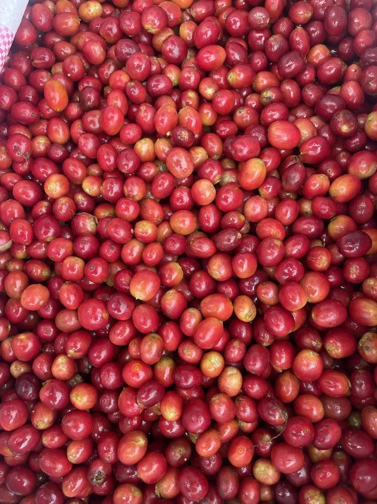
Matière premièreCafé cerise
Cerises d'Arabica récoltées à pleine maturité, à la main, par nos membres — base de toute tasse d'exception.
Cueillette manuelle100% mûres
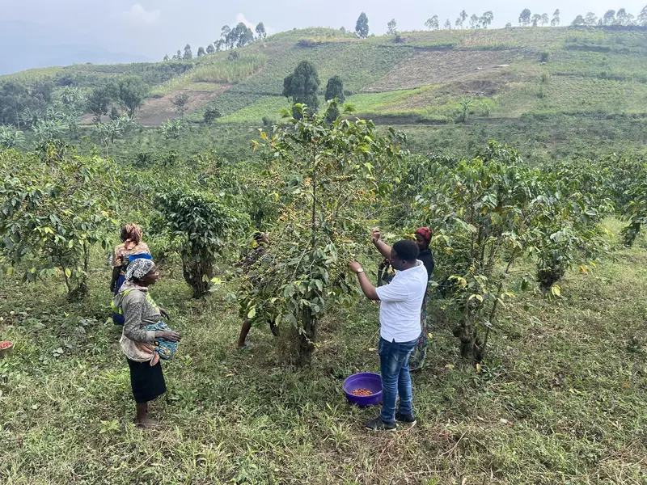
La Société Coopérative Agricole Maendeleo — des centaines de petits producteurs du Kivu unis pour produire, transformer et exporter un café de spécialité traçable.
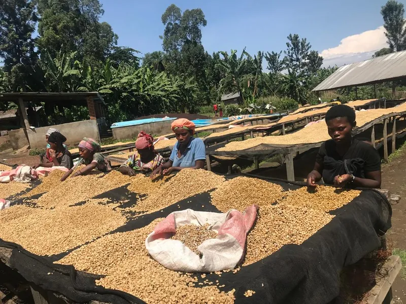
La Société Coopérative Agricole Maendeleo — « développement » en swahili — regroupe des petits producteurs qui unissent leurs efforts pour améliorer la qualité de leur café, accroître leur productivité et accéder à des marchés plus rémunérateurs.
« Uni pour un Café Compétitif »
Devenir une coopérative de référence du café de spécialité en RDC, en améliorant durablement les conditions de vie des producteurs et de leurs familles.
Structurer les producteurs, améliorer qualité et traçabilité, ouvrir les marchés, accroître les revenus et promouvoir une agriculture durable.
Nos membres cultivent dans les territoires de Kabare et Kalehe, sur les rives du lac Kivu — un climat tropical de montagne idéal pour l'Arabica.
Grâce à la récolte sélective des cerises mûres et à un traitement soigné, notre café atteint généralement un score de dégustation supérieur à 80 points — catégorie café de spécialité.
Traitement par voie humide (café lavé) et par voie sèche (café naturel), selon les exigences de nos acheteurs.
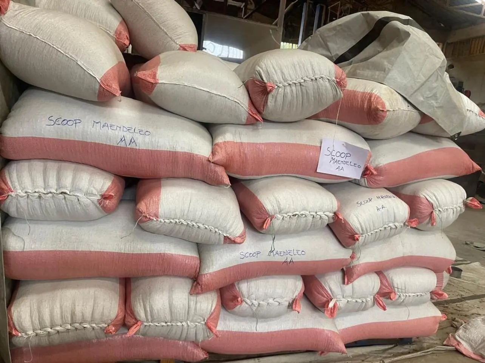
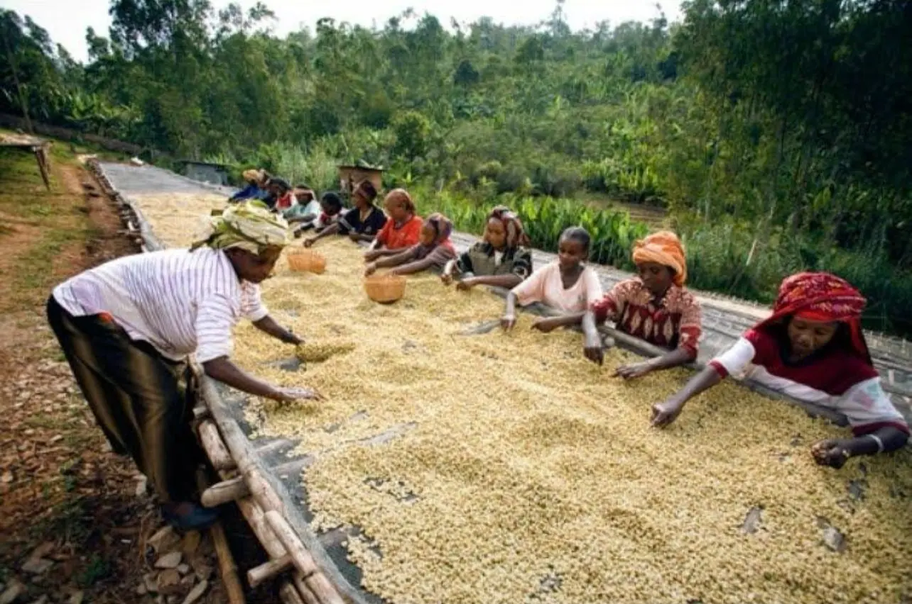
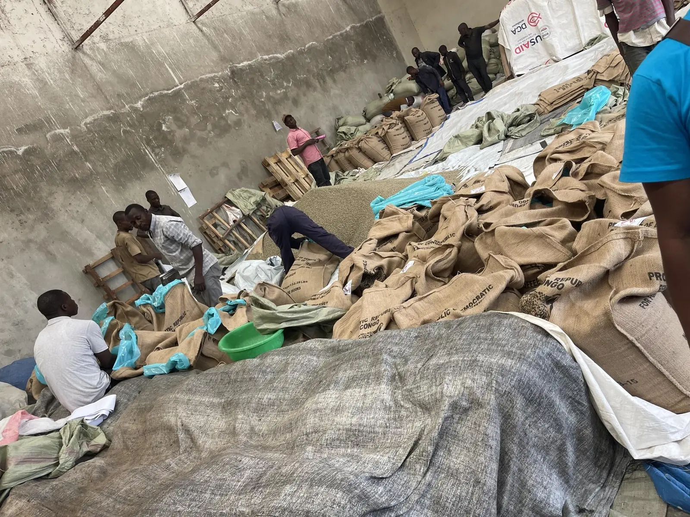
Seules les cerises rouges et mûres sont cueillies à la main par nos membres, garantissant sucrosité et homogénéité.

Matière premièreCerises d'Arabica récoltées à pleine maturité, à la main, par nos membres — base de toute tasse d'exception.
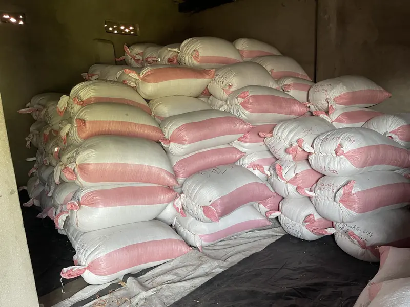
Semi-transforméCafé dépulpé, fermenté, lavé et séché sur claies, conservé dans nos magasins avant usinage.
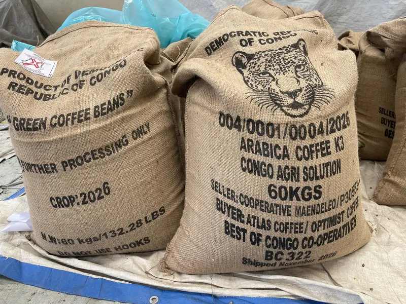
Prêt à l'exportCafé usiné, trié et calibré, conditionné en sacs jute de 60 kg avec doublure GrainPro.
Chaque lot est tracé de la station de lavage au sac. Ouvrez une fiche pour voir le profil en tasse, les spécifications et réserver un échantillon.
La commercialisation collective permet d'obtenir de meilleurs prix et d'assurer la transparence tout au long de la chaîne de valeur.
Acheteurs 2025 : Coffea Roasterie, Optimist, Atlas Coffee Imports, MIG Ltd, Pact Coffee
Au-delà du commerce, Maendeleo renforce la résilience des communautés et l'inclusion des femmes et des jeunes dans la production et la gouvernance.
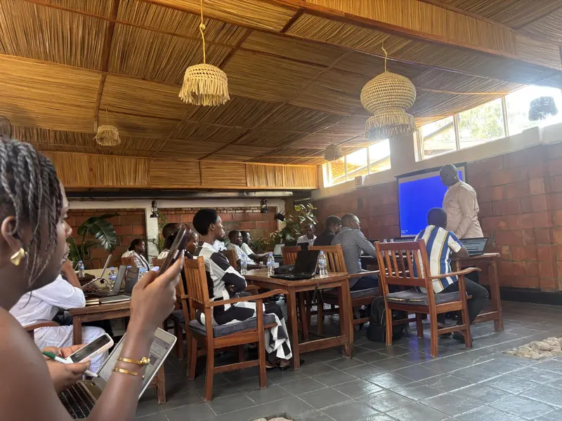
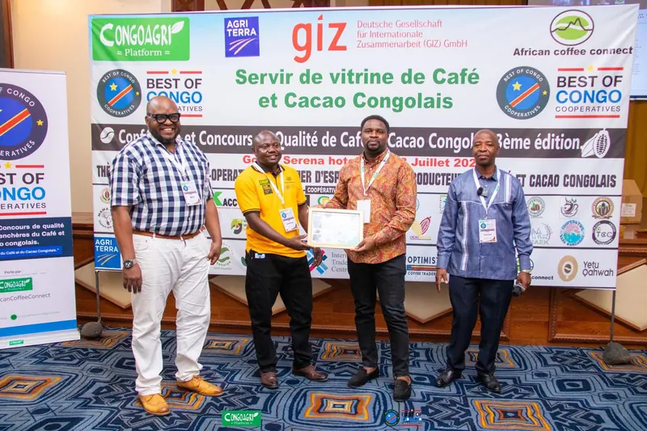
Certificat décerné lors de la 3ᵉ édition à Goma, aux côtés de CongoAgri, Agriterra et GIZ.
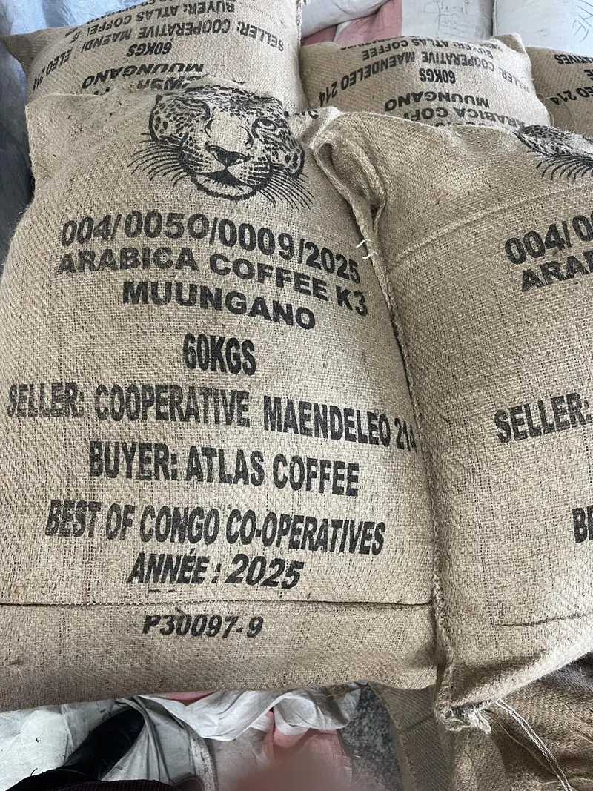
Sacs « Seller: Cooperative Maendeleo » à destination d'Atlas Coffee et Optimist Coffee.
Ces investissements renforceront la compétitivité de la coopérative et augmenteront directement les revenus des producteurs.
Développement des stations de lavage
Modernisation des infrastructures de transformation
Programmes d'amélioration de la productivité
Traçabilité et certifications
Expansion vers les marchés internationaux
Origine, variétés, procédés, export : les réponses aux questions que nous posent le plus souvent torréfacteurs et importateurs.
Dans les territoires de Kabare et Kalehe, au Sud-Kivu (RD Congo), sur les rives du lac Kivu, entre 1500 et 2000 m d'altitude, sur des sols humo-volcaniques. Le siège est à Katana.
Principalement Bourbon, ainsi que Jackson, SL28 et Mibirizi, adaptées aux conditions agro-climatiques du Kivu.
Le traitement par voie humide (café lavé : dépulpage, fermentation, lavage, séchage) et par voie sèche (café naturel). Le café atteint généralement plus de 80 points de dégustation, catégorie spécialité.
Deux saisons : de mars à juillet, puis de septembre à janvier.
Oui. La coopérative a le statut d'exportateur de café vert. Le café est trié par grades (AA, AB, BB, CC) et conditionné en sacs de jute de 60 kg avec doublure GrainPro. Elle a notamment vendu à Atlas Coffee Imports, Optimist, Pact Coffee, Coffea Roasterie et MIG Ltd.
Remplissez le formulaire de contact du site, ou écrivez à scoopmaendeleo@gmail.com, ou appelez le +243 994 623 869 en précisant le produit, le volume et le port de destination.
Torréfacteurs, importateurs, partenaires : demandez un échantillon, une fiche technique ou une cotation.